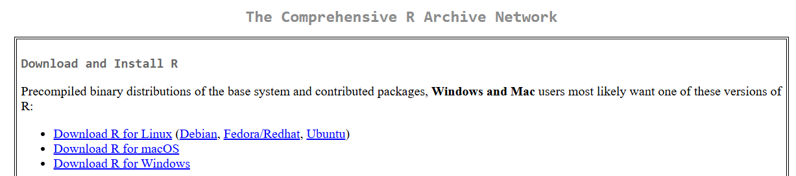
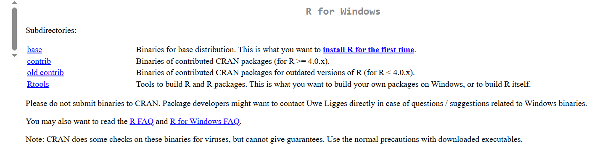
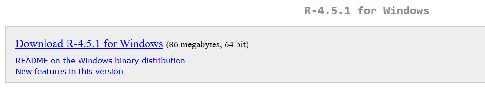
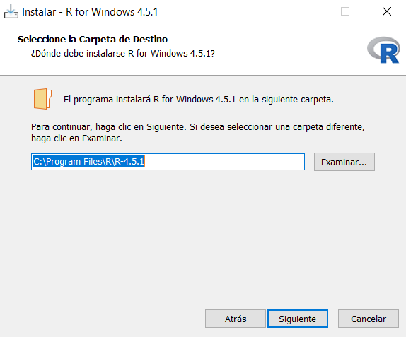
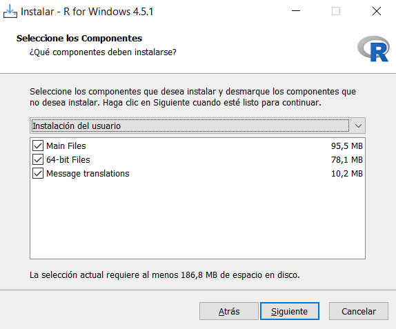
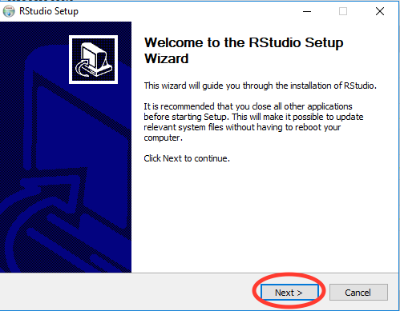
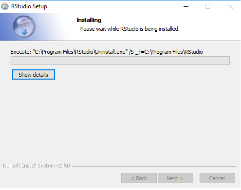

Estadística
Agosto 2025
1 Estadística Descriptiva
Este libro lo guiará a través de conceptos fundamentales R, estadística y sus aplicaciones. Está organizado en las siguientes unidades:
- Introducción a R
- Estadística descriptiva
2 Introducción a R
2.1 ¿Por qué usar R?
R es un lenguaje de programación libre que está diseñado principalmente para análisis estadístico. Es un proyecto de código abierto lo que permite su acceso a cualquier persona.

3 Instalación de R
Ingrese a la página de R, https://www.r-project.org/, luego siga los siguientes pasos: 1. Seleccione CRAN

- Seleccione a Colombia

- Seleccione su sistema operativo

- Seleccione Windows


- Luego ejecute el archivo que se descargó, seleccione el idioma y a las siguientes ventanas de click en siguiente.






4 Instalación de Rstudio
Luego de instalar la base procedemos a instalar un entorno de desarrollo integrado (IDE) denominado Rstudio. Para tal fin ingresamos a la siguiente página https://www.rstudio.com/products/rstudio/download/, en la parte inferior de la página buscamos :



